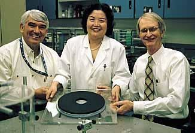

The Scientists





Investigation Map
Recent Developments
2026
A hiker discovered remains on May 28 in Carson National Forest. NM State Police confirmed ID on May 30: Melissa Casias, LANL employee missing since June 2025. Handgun found with the remains. Cause of death not yet determined. Both her phones were found wiped of all data when she vanished.
NM State Police →2026
Witness told police she and Space Force members had dinner with McCasland the night before. He “wasn’t his usual self — spacey and quiet.” Wife revealed he’d started new medication for sleep, weight loss, and anxiety. He described feeling like “the after-effects of a bad hangover” the morning he walked out.
NewsNation →2026
Oklo, Standard Nuclear, SHINE, Flibe Energy, and Exodys Energy selected for surplus plutonium. Los Alamos — where Casias, Chavez, and former director Charles McMillan (killed in unexplained 2024 crash) worked — is a primary source of the material. Oklo’s CEO sits on PCAST. Murdered MIT physicist Loureiro’s lab spun out Commonwealth Fusion, whose CEO was named to PCAST 3 months after the killing.
CNN →2026
Director Patel promised a final report “in short order” on April 30. Over five weeks later: nothing. No report, no timeline, no explanation. Investigation cited as “active.”
Fox News: Original promise →2026
Snyder arraigned for the Feb 16 shooting of Caltech astronomer Grillmair. Held on $3M bail. Widow says motive was revenge over trespassing/police contact. No prior connection to victim.
MyNewsLA →2026
First bodycam footage in the case. Wife: “I have some indication that he must have planned not to be found.” Separately disputed dementia claims. McCasland still missing — no confirmed sightings.
YouTube: EWU Bodycam →2026
Second PURSUE batch: 51 videos, 7 audio recordings, 6 redacted PDFs. Includes footage of F-16 engaging unidentified object over Lake Huron (Feb 12, 2023). Portal has surpassed 1 billion visits. Third batch expected June 2026.
NewsNation →2026
Doug MacGregor publicly questions whether the scene near Mount Waterman was staged. Cell phone forensic data obtained but never publicly released.
LA Mag →2026
The Department of Defense published 162 never-before-seen UAP files on a new public portal at war.gov/UFO, including ~41 minutes of video from encounters between 2020–2026, Cold War-era saucer reports, and documents from the FBI, DOD, NASA, and State Department. One file describes an object making multiple “90-degree turns” at ~80 mph. Officials say additional files will be added “on a rolling basis.” The release comes amid the ongoing FBI probe into missing and dead scientists — several of whom had ties to aerospace and advanced propulsion research.
NPR: UFO files released →2026
Wikipedia published a dedicated article classifying the missing and dead scientists as a “conspiracy theory,” citing experts who describe the pattern as apophenia — the tendency to perceive meaningful connections in unrelated events. The page references official statements dismissing links between the cases while downplaying unresolved disappearances and open FBI investigations.
Wikipedia: Missing scientists conspiracy theory →2026
The NTSB preliminary report reveals the Mooney M20J carrying the Moffatt family climbed only ~200 feet above ground level before banking right, then quickly rolling left and descending behind a tree line. The crash occurred ~1,000 feet from Union County Airport, SC after a refueling stop. Surveillance video captured the full sequence. Weather has been ruled out — conditions were clear with 10 miles visibility. No flight plan had been filed. Investigation now focuses on sudden loss of control after refueling. Wreckage relocated to a secure facility; final report expected in approximately one year.
Source: WAFF →2026
The FBI concluded that MIT fusion scientist Nuno Loureiro was killed by Cláudio Manuel Neves Valente, 48, who they say acted alone out of personal grievances. Investigators say Valente targeted Loureiro and Brown University as symbols of “personal failures and injustices he perceived were inflicted by others.” The bureau acknowledged that only Valente himself knew the full reason behind the attacks.
CNN: Shooter targeted symbolic victims tied to grievances →2026
President Trump publicly contradicted the urgency of his own administration’s FBI probe, telling reporters the cases don’t appear linked — days after the White House directed the bureau to investigate.
CNN: Trump remarks on scientists →2026
Detailed analysis tracks the narrative’s four-month journey from Dark Journalist’s YouTube stream and Jessica Reed Kraus’s Substack through the New York Post and Daily Mail into a federal investigation.
CNN: From fringe to White House →2026
Missouri congressman says the NASA nuclear engineer, who died in a Tesla crash in July 2025 while working on Mars propulsion technology, fits the pattern and should be included in the FBI’s review.
Newsweek: Burlison adds new name →2026
FBI reviewing all state-level investigations at the White House’s request to determine connections through classified access or foreign actors. Declined to say how much will be public.
Fox News: FBI report coming “shortly” →2026
House Oversight making the investigation a priority. Comer: “It does appear that there’s a high possibility that something sinister is taking place here.”
Newsweek: “National security threat” →2026
Novartis researcher found three months after reported missing in December 2025. Wife told NBC News he was distraught following the death of both parents last year.
Snopes: What we know →2026
Entire board of NSF’s policy arm dismissed. Oversaw $8B+ in annual research funding since 1950. Follows DOGE scrapping 1,600+ NSF grants worth ~$1B.
Al Jazeera: NSB fired →2026
Burlison posted that a “young scientist named Joshua, working on the nuclear propulsion technology we’d need to reach Mars, just turned up dead in a Tesla crash after his car drove two hours by itself on rural backroads.”
Newsweek: Congressman adds new name →2026
DOD told the committee there are “no active national security investigations.” FBI, NASA, and DOE have not publicly indicated whether they complied.
House Oversight: Original FBI letter (PDF) →2026
Spokesperson Bethany Stevens says NASA is “coordinating and cooperating with the relevant agencies” but pushed back on the threat framing.
Orbital Today: NASA statement →2026
Bernalillo County Sheriff’s Office told Newsweek the case remains active but no connection to classified work has been established.
Newsweek: Sheriff update →2026
Major newspaper confirms full-cluster FBI investigation. Wikipedia now has a dedicated “Missing scientists” article.
Boston Globe →2026
Moffatt (60), a decorated Army veteran, Naval Test Pilot School grad, NASA JSC payload specialist on 14 Space Shuttle missions, and UAH research engineer, was killed with his entire family — wife Leasa (61), son Andrew (30, UAH research engineer), and son William (28, IT security) — when their Mooney M20 crashed near Union County Airport, SC during a refueling stop. NTSB/FAA investigating. Case count now 16.
WRG News: Moffatt family crash →2026
First formal confirmation the FBI is treating cases as potentially linked rather than isolated incidents.
Fox News: FBI statement →Critical Connections
| Weight | Who | What links them | Why it matters |
|---|---|---|---|
| STRONGEST | McCasland ↔ Reza | McCasland’s AFRL funded Reza’s Mondaloy from 1999. She worked directly under his oversight. | Both vanished. The inventor and her funder — gone 8 months apart. |
| STRONGEST | Sullivan → UAP testimony | Scheduled as UAP whistleblower before Congress. Dead within 2 weeks. IC IG flagged “severe misconduct.” | Only case with direct pre-death testimony link. FBI now probing. |
| STRONGEST | McCasland → Trump UAP order | Trump signed UAP disclosure directive Feb 19. McCasland vanished 8 days later. Held legal visibility over ALL classified DoD programs. | The man who knew everything disappeared the moment disclosure was ordered. |
| STRONGEST | Wilcock → scientists warning | Posted video 2 days before death warning about missing scientists. Had publicly stated he was not suicidal. Biographer died 2 days before him. | Most prominent public disclosure figure dead, same week as congressional deadline. |
| NOTABLE | Wright-Patterson × 3 events | McCasland commanded it. Sullivan worked NASIC there. 3 AFRL personnel died Oct 2025 — no findings released. | Same base, three separate death events. Never connected by mainstream coverage. |
| NOTABLE | NM walkaway pattern | Chavez, Casias, Garcia, McCasland all left Albuquerque-area homes on foot without phones. Casias wiped devices first. Casias remains found May 2026 in Carson NF with handgun. | Four people, same region, same behavioral signature. First body recovered. |
| NOTABLE | JPL institutional silence | Hicks, Maiwald, Reza all died or vanished. NASA issued zero statements. No autopsies. No comment to press. | Institutions announce prominent deaths. Active silence warrants FOIA. |
| NOTABLE | Huntsville × 4 dead | Eskridge (2022), LeBlanc (2025), Tony Moffatt + Andrew Moffatt (2026). All aerospace/NASA-connected. All based in Huntsville, AL. | Single most concentrated location: 4 deaths, all connected to NASA or UAH aerospace research, in a city built around Redstone Arsenal. |
| CONTEXT | Mondaloy → national security | Reza’s patent freed US classified satellite launches from Russian RD-180 dependency. Now linked to SpaceX/Blue Origin. | The tech is strategically critical. Inventor and funder are both gone. |